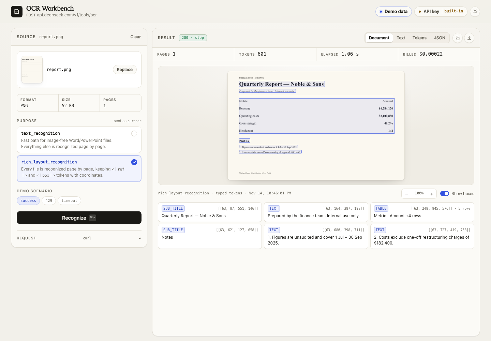
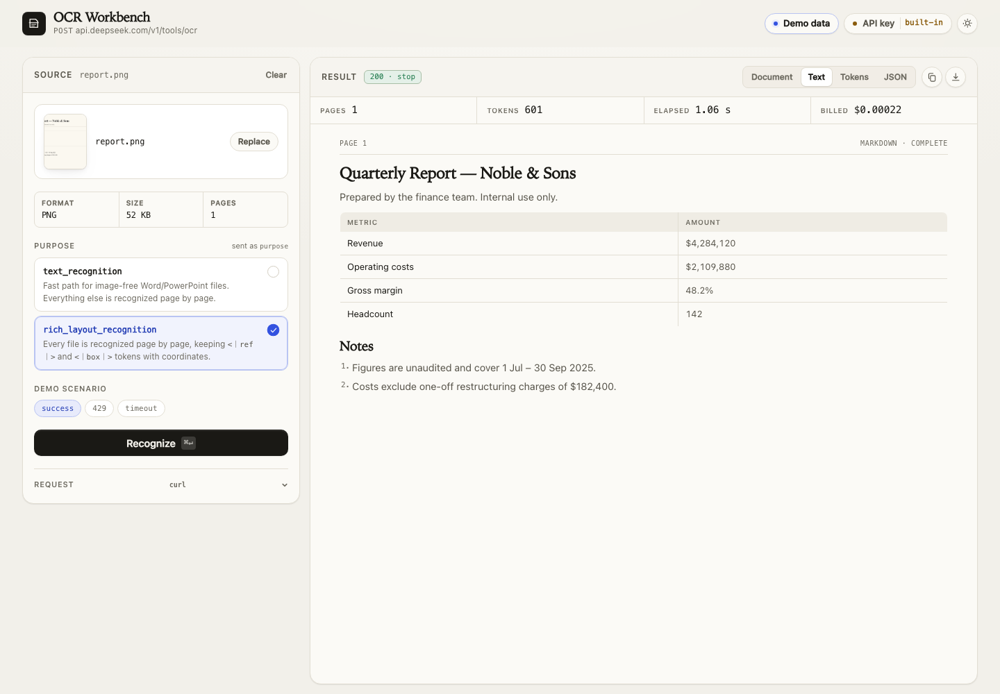
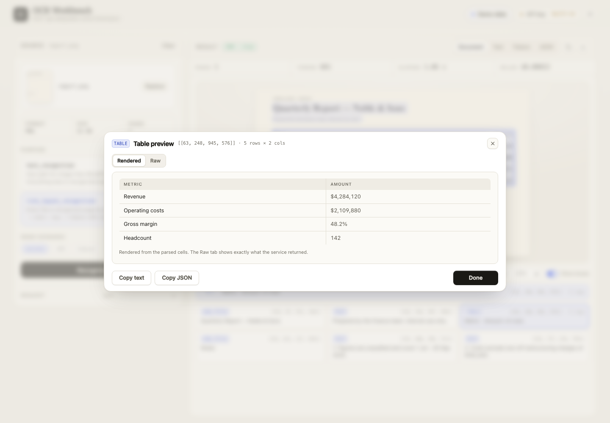

OCR Workbench
A browser test bench for the
DeepSeek OCR API.
Drop a document, pick a purpose, and read the result page by page — with the
｜ref｜/｜box｜ coordinates drawn back onto the page.
No build step, no dependencies, no server code. Static files, deployable to any static host.

Run it
python3 -m http.server 4180
open http://127.0.0.1:4180/index.htmlServe over http://localhost — opening index.html as a
file:// URL blocks the request with a CORS error.
Bring your own key
No key ships with this page. Paste yours via API key in the header —
keys come from platform.deepseek.com.
It is stored in this browser's localStorage only, and requests go
straight from the browser to api.deepseek.com, so nothing passes
through a third party.
No key at all? Flip Demo in the header. Every scenario
then replays a real captured response from demo/recorded/ — success for
all three formats, a 429, a 200-body gateway timeout, and the
intermittent empty page.
What it does
Source panel. Drag a file in, or load one of the samples. Accepts PDF, Word, PowerPoint and images, exactly like the API. Images and PDFs get a real thumbnail (PDF via pdf.js, first page). Size, format and page count are read locally before anything is sent.
Purpose. The two documented values, with the consequence of each spelled out. The API's behaviour is not symmetric, and the UI says so:
| purpose | what comes back |
|---|---|
text_recognition |
Markdown. Word/PowerPoint files without images are text-extracted, not recognized. No tokens. |
rich_layout_recognition |
Every file recognized page by page, keeping ｜ref｜/｜box｜ tokens with coordinates. |
Result panel. Four views of the same response:
- Document — the page with every
<box>drawn in place, plus a block list. Hover or focus a block to highlight its region and see its coordinates. Tables preview as their header row plus a row count, never as raw<table>markup — the unmodified service output lives in the Tokens and JSON tabs. Zoom with − / + (50 %–300 %, click the percentage to fit); the boxes stay registered to the page at every level because they are positioned in page percentages, not pixels. - Text — the recognized content, rendered as Markdown (headings, lists,
tables, emphasis). Built from DOM nodes, never
innerHTMLof API text. For token responses this is the stripped text, so it differs from the Tokens view. - Tokens — the raw page text with the special tokens highlighted, so you can see exactly what the service emitted.
- JSON — the whole response body, downloadable.


Per page you get finish_reason (length is flagged as truncated), and per
response the page count, token usage, elapsed time and an estimate of the bill.
Opening a block
Long text is never silently truncated: the card clamps to two lines, and clicking
shows the whole block. For a table it renders the parsed rows as a real table —
header row, sticky on scroll — with a Raw tab showing exactly what the
service returned, so a malformed table (nested <table><table>, repeated cells)
can be compared against the cleaned version. Copy text gives TSV for tables,
Copy JSON gives type, box, raw text and parsed rows.
The block dialog: result and page side by side
The dialog opens near-fullscreen — the viewport minus a 10px void — and splits into the extracted text/table on the left and the source page on the right. That is the comparison the recognizer is asking you to trust: you read the cells and the pixels together instead of closing the dialog to check, then reopening it to check the next one.
- Hide collapses the page pane. Under 860px the two panes stack, with the page pane starting collapsed so the result is not squeezed on a phone.
- Images and PDFs render from the local file, the pane follows the page you are on, and formats with no client-side renderer say so instead of showing an empty pane.
- The page pane zooms 50 %–400 % (− / +, click the percentage to fit).
- A Box switch draws the opened block's coordinates on the page — only that one block, opt-in, remembered across visits. The box is positioned in page percentages, so it stays registered at every zoom level.
Whole document
A button next to the Rendered/Raw tabs switches the left pane from the single block to the OCR of every page, with the page you are on marked — so you can read the full extraction without leaving the comparison. Raw and the copy buttons follow the scope: Copy text copies the whole document when that scope is selected, and the block otherwise. Reopening a block resets to the block scope; the zoom level is kept for the page pane.
The inspector bar
Under the page there is one fixed-height row showing the hovered or focused
block: type, a single line of its text, and its coordinates. The line is
ellipsised with plain CSS, and the full text is in the DOM (and in the
title tooltip) — no JavaScript cutting, and because the row never appears
or disappears, hovering a block cannot shift the grid under the cursor.
Errors
Every documented failure is mapped to a cause and a next step: 400 bad form,
401 key rejected, 402 no balance, 408 slow upload, 413 too large,
429 15 concurrent jobs, 500, 503, 504, and the
200-with-error-body gateway timeout. Network and CORS failures are
explained rather than echoed.
Things the live API does that the guide does not say
These were found by testing against the real endpoint, and the UI handles them:
- The rich-layout token shape is different from the guide. The docs show
the text inside the ref:
The live service instead puts the element type in the ref and the content after the box:<｜ref｜>Revenue<｜/ref｜><｜box｜>[[62,289,300,330]]<｜/box｜><｜ref｜>sub_title<｜/ref｜><｜box｜>[[63,87,551,146]]<｜/box｜> # Quarterly Reportjs/parse.jsdetects both structurally (whitespace after the box means the second shape) and keeps the type, so blocks are labelledsub_title,text,tableand so on. text_recognitionreturns no tokens at all — it returns Markdown, and HTML tables for tabular content. So "no boxes" is a normal result, not a failure.- Responses can arrive with
status 200and anerrorbody, because recognition starts before it can fail. The body is always checked forerror. - A page can come back empty with
200 OK. Roughly one request in three returned a blank page text during testing on the same file. The status chip turns amber (200 · empty), the banner says so, and the toast offers Run again — the retry normally succeeds. - High-detail pages vary run to run. Two identical requests can return
different numbers of tokens. The UI never treats a token-free
rich_layout_recognitionresponse as a bug. rich_layout_recognitioncan mangle dense tables. Onsamples/bank-statement.pdfit emits nested<table><table>and repeats each cell (<td>CODE</td><td>CODE</td>). The parser collapses the duplication and the workbench flags it, recommendingtext_recognitionfor that page.
Recorded responses for every claim above are in demo/recorded/.
Files
index.html structure
styles.css design system
readme.html this page
js/parse.js token parser (both token shapes)
js/render-md.js safe Markdown renderer for the plain-text output
js/app.js state machine, requests, rendering
assets/ icon, favicon, social preview
samples/ test documents
demo/recorded/ real captured API responses, used by Demo mode
tools/ headless-Chrome verification, social card sourcelocalStorage and is sent only to
api.deepseek.com. Demo mode sends no file anywhere — it replays recorded
JSON from this repository.